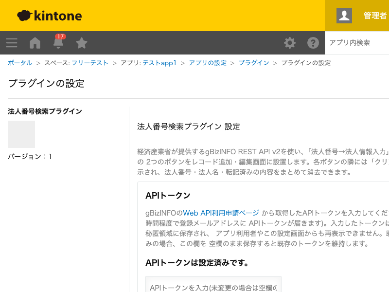

GovAppsプラグイン 安全性を確認できる無料kintoneプラグイン集
経済産業省が提供するgBizINFO REST API v2を使い、「法人番号→法人情報入力」「法人名→法人番号検索」の 2つのボタンをレコード追加・編集画面に設置します。法人番号から代表者名・資本金・従業員数・所在地 などの法人情報を自動入力したり、法人名の一部を入力して候補から選ぶだけで法人番号を自動入力したり できます。各ボタンの隣には「クリア」ボタンも表示され、入力・転記した内容をまとめて取り消せます。 法人番号を軸に企業情報を取得するサービスは国税庁のAPIを使うものが多く、gBizINFOを使う ものはあまり多くありません。gBizINFOはAPIトークンの申請から即日〜数時間程度で使えるようになる (国税庁側より早いことが多い)のも利点です。
取引先マスタや与信管理アプリなどで、法人番号を文字列フィールドに入力するだけで、代表者名・資本金・従業員数・所在地・事業概要などの公開情報を自動入力できます。手入力による表記ゆれや転記ミスを防げます。
法人名(部分一致)で検索すると、候補一覧がモーダルで表示されます。候補の中から該当する法人を選ぶだけで、法人番号と法人情報が自動入力されます。法人番号を事前に調べておく手間が省けます。
転記項目の出力先フィールドは、レコード追加・編集画面で常に編集できなくなります。該当する法人が見つからない場合(未入力・0件ヒットを含む)、出力先フィールドと法人番号フィールド(法人名検索の場合)はすべて空でクリアされます。法人名検索は最大50件までの候補を表示し、超過分は取得しません(絞り込んだ法人名で再検索してください)。各ボタンの隣に表示される「クリア」ボタンを押すと、確認ダイアログのあと法人番号・法人名・転記済みの内容をまとめて空にできます。
kintoneセキュアコーディングガイドラインに沿って実装時にチェックしています。特に重要な点は次のとおりです。
kintone.plugin.app.proxy()(プラグイン専用のクロスドメイン許可API)経由のみで、生のfetch/XMLHttpRequestは一切使用していません。kintone.plugin.app.setProxyConfig()でプラグインの秘匿領域に保存され、通常のプラグイン設定(getConfig())には値自体を一切含めません。設定画面を再度開いても、保存済みのトークンは再表示されません。innerHTMLではなくtextContentのみで描画しており、外部APIレスポンスに含まれる文字列がDOM構造に影響することはありません。詳細な確認項目・確認日は下記GitHubのチェックリストに全項目を掲載しています。

このプラグインは、法人情報の取得のためにgBizINFO REST API v2(kintone.plugin.app.proxy()
経由)を実行します。「法人番号から取得」ボタンを押すたびに詳細取得APIが1回、「法人名から検索」
ボタンを押すたびに検索APIが1回実行され、候補を選んだ場合はさらに詳細取得APIがもう1回追加実行
されます(最大2回)。gBizINFO側のAPI利用回数の上限・制限については、gBizINFOのWeb API利用申請
ページの案内に従ってください。